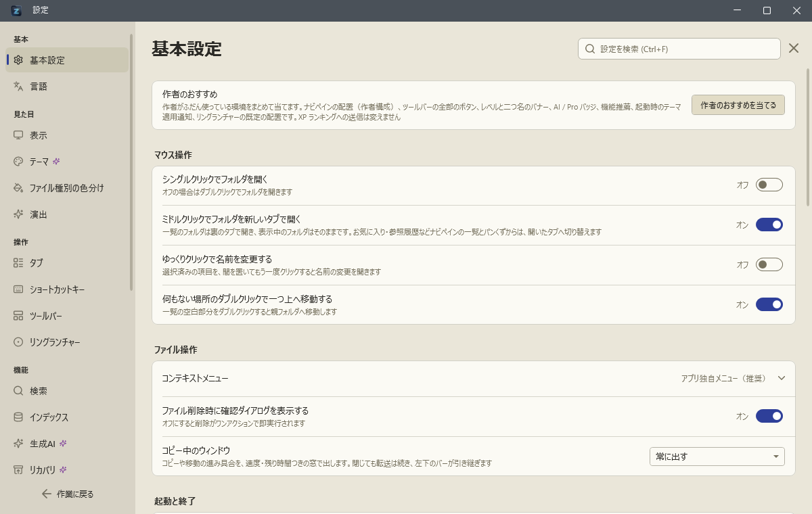
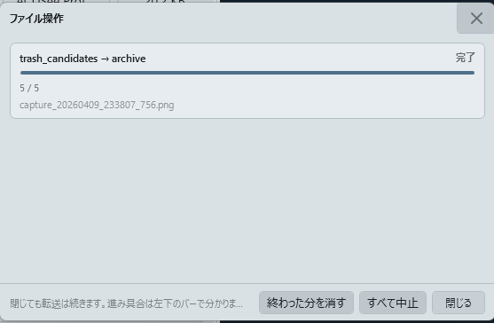
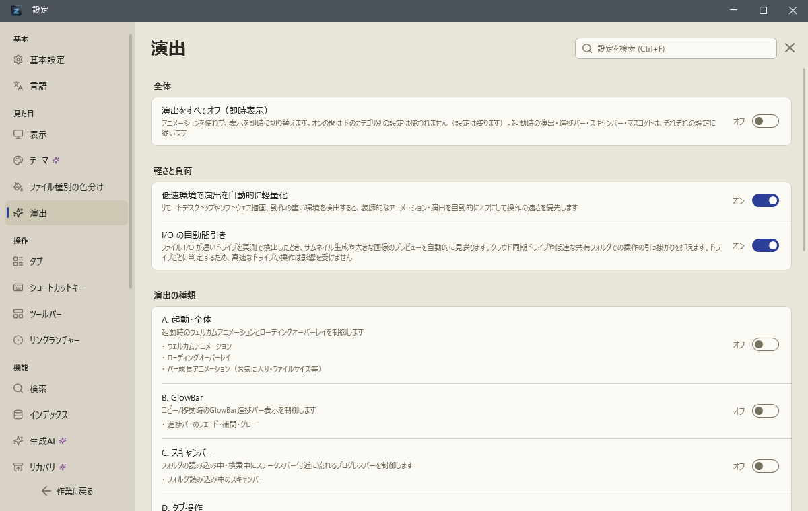
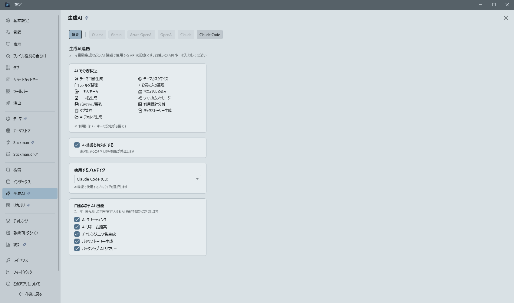

アプリ設定（Control Deck）の全項目¶
Ctrl+Shift+O で開く設定ビューは、左のナビの見出しごとにページが分かれています。各ページの項目を、ナビの並びの順にまとめます。詳しい説明が別の記事にあるページは、その記事へのリンクを置いています。

設定を探す¶
左のナビは、ページを 6 つの見出しでまとめています。選んでいるページには、左端に縦棒が付きます。
| 見出し | ページ |
|---|---|
| 基本 | 基本設定・言語 |
| 見た目 | 表示・テーマ・ファイル種別の色分け・演出 |
| 操作 | タブ・ショートカットキー・ツールバー・リングランチャー |
| 機能 | 検索・インデックス・生成AI・リカバリ・Stickman |
| コレクション | テーマストア・Stickmanストア・チャレンジ・報酬コレクション・統計 |
| アプリ | ライセンス・フィードバック・このアプリについて |
各ページは見出しごとに設定が 1 行ずつ並びます。見出しの下の設定は角の丸いカード 1 枚にまとまっていて、カードの中の行は細い線で区切られています。行の左に名前と説明、右に変えるための部品があります。オン／オフは右端のスイッチで切り替え、値はリストから選びます。右端に ⌄ のある行は、押すと選択肢（丸印で選ぶ）や細かい設定が開きます（開いた行の右には今の値が出ます）。
どのページにあるか分からない設定は、右上の検索欄で名前から引けます。
Ctrl+F（またはCtrl+E）で検索欄へ移れます- 打つと、名前に合う設定が「名前」と「ページ › 見出し」の 2 行で出ます。全角と半角・カタカナとひらがな・大文字と小文字の違いは区別しません。空白で区切った語は、すべて含むものだけが残ります（「表示 行」など）
- 英語の名前でも引けます（「font」「theme」など）
↑↓で選んでEnter（またはクリック）で、そのページのその設定まで飛びます。飛んだ先は約 1.4 秒だけ枠で囲み、その上を検索欄のある右上の角から光が 1 周して溶けます（演出をオフにしていても、枠は同じ長さだけ出ます）- ショートカットの名前も出ます。選ぶとショートカットキーのページで、その名前で絞り込みます
Escは 1 回目で結果を閉じ、2 回目で文字を消します。検索欄が空のときのEscは、これまでどおり設定画面を閉じます
検索の結果に出るのは、ページ名と、各ページの設定の見出し・項目名です。いまはページの中の設定のうち、基本設定・言語・表示・ファイル種別の色分け・演出・タブ・検索・インデックス・リカバリの各ページまで飛べます。そのほかのページはページ名で開けます。
基本設定 (General)¶
作者のおすすめ
作者がふだん使っている環境をまとめて当てます。当てるのは、ナビペインの配置（プリセットの「作者構成」）、ツールバーのボタンの並び（「標準」）、タイトルバーのレベルと二つ名のバナー、AI / Pro バッジ、機能推薦、起動時のテーマ適用通知、リングランチャーの既定の配置です。はじめて使う方の既定は普通のファイラーに近い控えめなものにしてあるので、このアプリらしい使い方を試したいときの入口になります。当てる前に確かめます。リングランチャーの割り当てを自分で変えていて、どこにも保存していないときは、失われることも知らせます。XP ランキングへの送信は変えません。どれも後から個別に設定し直せます。
マウス操作
- シングルクリックでフォルダを開く: オンでシングルクリック、オフでダブルクリック遷移（既定オフ）。
- ミドルクリックでフォルダを新しいタブで開く: 一覧のフォルダを裏のタブで開きます（既定オン）。詳しくは タブ操作。
- ゆっくりクリックで名前を変更する: 選択済みの項目を、間を置いてもう一度クリックすると名前の変更を開きます（既定オフ）。
- 何もない場所のダブルクリックで一つ上へ移動する: 一覧の空白部分をダブルクリックすると親フォルダへ移動します（既定オン）。
ファイル操作
- コンテキストメニュー: ファイル一覧の右クリック時に表示するメニューを選択します。
- アプリ独自メニュー（推奨）: 開く・コピー・削除・名前の変更・お気に入り・インデックス検索など基本操作を即座に表示。Shift+右クリックでエクスプローラ互換メニューへ一時切替できます。
- エクスプローラ互換メニュー: 7-Zip など Windows の標準右クリックメニュー（シェル拡張含む）を表示。右ドラッグで落としたときのメニューにも、アプリの項目が並びます（→ ドラッグ＆ドロップ）。
- ファイル削除時に確認ダイアログを表示する: オフでシェルの確認を省略してごみ箱へ移動（既定オン）。
- 7z・rar などの展開に Windows の機能を使う: ZIP・TAR 以外の書庫（7z・rar・tar.xz など）を、エクスプローラーと同じ Windows の書庫フォルダで展開します（既定オン）。書庫フォルダが扱えない Windows（Windows 10 など）では、Windows に入っている tar.exe で展開し、tar.exe も読めない 7z・tar.xz・tar.bz2 はアプリに内蔵した部品で展開します。オフにすると、これらをすべて使わず内蔵の ZIP・TAR だけになります。詳しくは アーカイブの展開・圧縮。
- 書庫をダブルクリックしたら中を開く: zip・7z・rar などを、エクスプローラーと同じ Windows の書庫フォルダでペインの中に開きます（読み取り専用・既定オン）。オフにすると既定のアプリで開きます。Shift を押しながら開いても既定のアプリで開きます。
- ZIP の圧縮レベル: 「圧縮」で作る ZIP の既定の強さ（圧縮しない・速さ優先・標準・最大・自動。既定は標準）。「自動」は写真・動画・書庫など、もう圧縮されているファイルを縮めずに詰めます。その回だけ変えるときは右クリックの「アーカイブ ▶ 圧縮レベルを指定して圧縮」。TAR.GZ には効きません。詳しくは アーカイブの展開・圧縮。
- コピー中のウィンドウ: 下の「コピー中のウィンドウ」を見てください。
コピー中のウィンドウ
コピーや移動を始めると、進み具合のウィンドウが出ます。1 つのウィンドウに操作が行として並び、それぞれに速度・残り時間・件数・サイズ・いま処理しているファイルが出ます。行ごとに一時停止・再開・中止ができ、下段に「すべて中止」「終わった分を消す」があります。ウィンドウを閉じても転送は続きます（画面左下のバーが引き継ぎます）。タスクバーのアイコンにも進み具合が出るので、ほかのアプリで作業していても分かります。すべて成功すると 1 秒待ってから閉じます。下段の 「終わったらすぐ閉じる」（既定はオフ）を付けると、待たずにすぐ閉じます。この選択は保存され、次に開いたときも同じです。中止や失敗があった回は、どちらでもそのまま残ります（結果を読めるようにするためです）。結果はトースト通知でも出ます。新しいコピーや移動を始めると、前回までの終わった行は片付けられます。

出し方は 3 つから選べます。常に出す（既定）／大きいときだけ出す（50 件 / 50MB 以上）／出さない（左下のバーだけ）。
起動と終了
- 起動時に前回のタブを復元する: オフでホームフォルダのみで起動（既定オン）。
- フォルダ別の表示設定を自動復元する: フォルダごとにソート順・表示モードを記憶し、再訪問時に自動適用します（既定オン）。
- Windows のサインイン時に起動する: 下の説明を見てください。
- 起動時プリセット: 起動したときに自動で当てる ウィンドウ配置・ナビペイン のプリセットと ワーキングセット を選びます（プリセット・ワーキングセット）。
- Aペインのホーム / Bペインのホーム: A ペイン・B ペインのホームを個別に設定します。「表示中のフォルダを設定」で今開いているフォルダを、「フォルダを選択」でダイアログから選んだフォルダをホームにします。
Windows のサインイン時に起動する
Windows にサインインしたときに Zenith Filer を起動します。既定はオフです。
スタートアップフォルダにショートカットを置くだけの仕組みで、レジストリは変更しません。解除はこのスイッチを切るほか、Windows の 「設定 > アプリ > スタートアップ」 からも行えます。
オンにすると常駐モードも同時に有効になります。常駐していないとウィンドウを閉じた時点でアプリが終了し、アプリ呼び出しキー（アプリの呼び出しキーが効かないとき）が効かなくなるためです。起動は最小化状態で行うため、サインインのたびにウィンドウが前面に出ることはありません。
ウィンドウ
- 常駐モード（トレイに最小化）: ウィンドウの×ボタンを押してもアプリが終了せずシステムトレイに最小化されます（既定オフ）。詳細な操作対応表は 常駐モード を参照。
- ウィンドウを画面端にスナップする: オンのとき、ウィンドウをドラッグして画面端（タスクバーを除いたワークエリア）に 15px 以内まで近づけると、磁石のようにピタッと端へ吸着します。上下左右の各辺と四隅に対応し、ウィンドウが表示されているモニタを基準に判定するためマルチモニタ環境や高 DPI でも自然に揃います。そのままドラッグを続ければ引き剥がせます。リサイズ時は吸着せず、Windows 標準の Aero Snap（Win + 矢印など）とも併用できます。既定はオン。
ナビペイン
- 左ナビペインを自動的に隠す: オンにすると左ナビペインを通常は閉じておき、ウィンドウ左端の細い領域（12px）にマウスカーソルが入ったとき、約 0.15 秒後にオーバーレイとしてスライドイン表示します。その外側 32px までの範囲も、1 秒とどまれば同じように開きます — 端を狙い損ねても拾えるようにするための保険なので、通りすがりに横切っただけでは開きません。カーソルが離れると約 0.4 秒後にスライドアウトします。A ペイン・B ペインの表示領域を最大限に使いたい場合に有効です。
- 右ナビペインを自動的に隠す: 右側のナビペインに対する同様のトグル。左右独立して ON/OFF できます。
- ピン留め: 自動表示中のナビペインヘッダ右上にピン留めボタンが表示されます。クリックすると以後カーソルが離れても閉じなくなり、もう一度クリックすると解除されて通常の自動隠しに戻ります。ピン状態はアプリ再起動でリセットされます。
- 表示切替のキー・リングランチャーから開く: 自動的に隠している側でも、「左ペインの表示切替」「右ペインの表示切替」（リングランチャーの ◀ ▶ など）で一時的に出せます。もう一度同じ操作をするか、ナビペインの外をクリックすると閉じます。ピン留めしていても、表示切替で閉じるとピン留めは外れます。自動的に隠す設定そのものは変わりません。
- D&D／コンテキストメニュー中の保護: ナビペイン上でドラッグ＆ドロップ中、または右クリックメニューを開いている間は、自動的な閉じる動作が抑制されます。
- 自動的に隠す設定の既定値は、左右どちらもオフです。
- ツリーにクイック アクセスを出す（既定オン）／ツリーにライブラリを出す（既定オフ）／ツリーにネットワークを出す（既定オン）: フォルダのツリーに並べる場所を選びます。詳しくは ナビペイン。
- 最近開いたフォルダの除外: 「最近開いたフォルダ」に出さないようにしたフォルダの一覧です。ここから除外を解除できます。
外部アプリ
「テキストエディタで開く」で使用する実行ファイルを明示指定できます。OS の .txt 関連付けに依存せず、お好みのエディタ（VS Code / Notepad++ / サクラ / Notepad など）を直接起動します。
- 実行ファイルパス: エディタの
.exeパスを直接入力するか、[参照…]ボタンで選択。空欄にすると OS の既定アプリにフォールバックします。 [自動検出]: PATH 上の VS Code → VS Code の既定のインストール先 → Notepad++ → サクラ → Windows 標準 Notepad の順に探索し、最初に見つかった実行ファイルを設定します。- 指定したパスが存在しない場合は安全側に倒れ、OS 既定アプリで開きます。
- 対象に足す拡張子: 「テキストエディタで開く」を出す拡張子を、カンマ区切りで足せます（例:
csv, dat）。先頭の.や*.は付けても付けなくても構いません。既定で対象の拡張子（.txt・.md・.jsonなど）はそのまま残り、欄の下に一覧が出ます。足した拡張子は、2 つのファイルを並べる「テキスト比較」の対象にもなります。
ヘルプとお知らせ
- 起動時に更新のお知らせを表示する: 更新した直後の起動で、そのバージョンで変わった点をカードで表示します（既定オン）。
- 「はじめの 5 つ」を表示: 最初に出る操作の手引きを、もう一度表示します。
- 起動時のテーマ適用通知を表示する: テーマを自動で選ぶ使い方のとき、どのテーマが当たったかを起動時に知らせます（はじめて使う方は既定オフ）。
- 表示時間: 通知の表示時間を 短め（1.5 秒）／標準（3 秒）／長め（5 秒）から選択。
データと同期
- 実績の端末間共有: USB メモリやクラウド同期フォルダ（OneDrive 等）上の
achievements.jsonを指定すると、両端末で実績（レベル・XP・達成チャレンジ・二つ名）を共有します（既定オフ）。設定・お気に入り等は端末ごとのまま変わりません。「今すぐ同期」ですぐに合わせられます。
言語 (Language)¶
表示言語 を選びます。10 言語から選べ、日本語以外の翻訳は AI で作っています。data\lang フォルダに言語ファイルを足すと、この一覧に出ます（設定ファイル構造）。
表示 (Display)¶
文字とサイズ
- アプリフォント: アプリ全体のフォントを選びます。
- ファイル一覧の行高: 超コンパクト（20px）／コンパクト（24px）／標準（32px）／ゆったり（40px）。変更は即座に A/B 両ペインに反映され、再起動後も保持されます。
- 一覧の文字 / 一覧のアイコン / タブの文字: 大きさを、それぞれ個別に決められます。いずれも既定は 「自動（行の高さに合わせる）」 です。自分で選ぶと、行の高さを変えても文字の大きさはそのまま保たれます。タブの文字は A/B ペインのタブと、ナビペインのタブ一覧の両方に効きます。読めない大きさにならないよう、文字は 8〜32、アイコンは 8〜48 の範囲に収められます。
ウィンドウ
- タイトルバーにフォルダパスを表示する: フォーカス中のペインのフルパスをタイトルバーに表示（既定オン）。
ファイル一覧
- ファイルの拡張子を表示する: オフでファイル名から拡張子を非表示（既定オン）。
- 隠しファイル・フォルダを表示する: Windows の隠し属性ファイルの表示切替（既定オフ）。
- 保護されたオペレーティング システム ファイルを隠す: 隠し属性とシステム属性の両方が付いたファイル・フォルダ（
$RECYCLE.BIN・pagefile.sysなど）を出しません（既定オン）。エクスプローラーの同名の設定と同じです。システム属性だけ・一時属性の項目はこの設定に関わらず出ます。一覧・パンくずのフォルダの一覧・検索・ナビペインのツリー・CSV / Excel の出力に効き、インデックス検索には効きません。 - 一覧の行を交互に色分け: オンで一覧の行を1行おきにごく淡く色分けし、横に長い一覧でも行を目で追いやすくします（既定オフ）。表示色は現在のテーマの背景色に対して自動計算されるため、どのテーマに切り替えても自然に馴染みます。
- 選択中の行に外枠を表示する: 選択中の行を、背景の塗りに加えてアクセント色の外枠でも示します（既定オン）。マウスを乗せた行と、キーボードで選んだ行を見分けやすくするためのものです。
- チェックボックスで項目を選ぶ: ファイル一覧の項目にチェックボックスを出し、押した項目だけを選択に足したり外したりできるようにします（既定オフ）。動きは 標準的なファイル操作 を見てください。
- サイズバーを表示する: サイズ列に、ファイルの大きさの比べを横バーで出します（既定オン）。横バーを毎回アニメーションする（既定オフ）をオンにすると、フォルダを移るたびにバーが伸びて出ます。
- フォルダのサイズを自動で数える: フォルダを開くと、中のフォルダのサイズを裏で数えてサイズ列に出します（既定オン）。数え方はエクスプローラーのプロパティと同じです。数え直すまでの間隔（毎回数え直す（既定）／10 分／1 時間／1 日）、ネットワークのドライブでも数える・クラウド（Box Drive・OneDrive・SharePoint）でも数える（どちらも既定オフ）を選べます。詳しくは 表示オプション。
- フォルダの中身をサムネイルで見せる: 大アイコン・特大アイコンの表示で、写真などの入ったローカルのフォルダに、中身が覗く絵を出します（既定オン・エクスプローラーと同じ）。OneDrive・Box・ネットワーク・遅い場所では出しません。
- アイコンにアプリの印を重ねる: Git・Dropbox などのアプリがアイコンに付ける印（オーバーレイ）を、一覧の見えている項目に出します（既定オフ）。詳細表示と一覧では小さいアイコンに、アイコン表示・並べて表示・コンテンツでは大きいアイコンの左下に重ねます。1 件ごとに Windows へ問い合わせるので、フォルダを開いてから少し遅れて出ます。ローカルの場所だけが対象です。
並び順
- 新規タブのデフォルト表示: フォルダを先頭に表示する（既定オン）と、デフォルトのソート順（名前／更新日／サイズ／拡張子 × 昇順／降順）。
Ctrl+Tやパス指定で開いた新規タブに適用、検索結果タブと既存タブには適用されません。 - ダウンロードフォルダを更新日時で並べる: オンでダウンロードフォルダに移動した際、自動的に更新日時の新しい順にソート（他フォルダへ移動すると元の並びに戻る。既定オン）。
- フォルダの中身に合わせて表示を変える: まだ一度も開いていないフォルダを開いたとき、中のファイルの拡張子からピクチャ・ミュージック・ビデオ・ドキュメントを決めて、その表示の型を当てます（既定オフ）。詳しくは 表示オプション。
目印
- 新着の目印: 最近更新されたファイルの更新日時を太くします。範囲は 強調しない／今日／24時間（既定）／3日／7日。
- たった今更新されたものにしるしを付ける（既定オン）: 更新から ✨ を付ける時間（1 分〜7 日・既定 10 分）のあいだ、ファイル名の右に ✨ を付けます。
- ネットワーク上のフォルダを開いているときに知らせる: ネットワーク上のフォルダを開いている間、タブとアドレスバーで知らせます（既定オン）。
バナーとバッジ
- AI / Pro バッジを表示する・ヘッダバーに二つ名バナーを表示する・ヘッダバーにレベルバナーを表示する: はじめて使う方は、どれも既定オフです。基本設定の「作者のおすすめ」でまとめてオンにもできます。
サムネイル
- ホバーサムネイルを表示する: 詳細ビューで画像ファイルにマウスを重ねると、カーソル横にサムネイルを出します（既定オン）。
- 動画サムネイル（追加ダウンロード）: mp4・mov・mkv など Windows が対応している形式のサムネイルは、追加の導入なしで表示されます。flv のように Windows がサムネイルを作れない形式でも表示したい場合だけ、このボタンから拡張（FFmpeg）を導入してください。約 130MB をダウンロードし、
data\ffmpeg\に配置します。導入すると、Windows が作れなかった形式に限って自動的にこちらで生成します。使わない方に容量を負担させないため、本体には同梱していません。 取得するのは LGPL 版で、改変せず別のプログラムとして呼び出すだけなので、本アプリのライセンスには影響しません。不要になったら「削除する」で消せます（ご自身で PATH に入れた FFmpeg には触れません）。
テーマ (Theme)¶
テーマの一覧から選んで当てるほか、自動で選ぶ方法（ランダム・カテゴリ・昼と夜の切り替え）、ペインごとのテーマ、色のカスタマイズ、AI によるテーマ作成、テーマストアへのアップロードを扱います。ストアで使うユーザー名もここで変えられます。詳しくは テーマ（配色カスタマイズ）。
ファイル種別の色分け (File Type Colors)¶
ファイル一覧のファイル名の文字色を、拡張子に基づくファイル種別ごとに変えられる機能です（既定オフ）。専用の設定ページから、以下を設定できます。
- ファイル種別ごとに文字色を分ける: オンにすると、ルールに従って一覧の文字色が種類ごとに変わります。
- おすすめルール（7カテゴリ）: 画像・動画・音声・圧縮ファイル・実行ファイル・書類・コードの7カテゴリについて、拡張子と色の組み合わせをあらかじめ用意しています。
- 自由編集: 各ルールの対象拡張子・色（
#RRGGBB）・有効/無効（各ルールの右端のスイッチ）はすべて編集できます。「ルールを追加」で新しいルールを作成でき、ユーザーが追加したルールは削除も可能です（ビルトインの7ルールは無効化のみで削除は不可）。 - 既定に戻す: ボタン1つでおすすめのルールセットに一括で戻せます。
- 一覧の交互色分けと同じく、実際に表示される色は現在のテーマの背景に対して自動調整されるため、どのテーマに切り替えても読みづらくなりません。
演出 (Effects)¶

アプリ内の演出効果をカテゴリに分け、カテゴリ別に右端のスイッチでオン／オフできます。ページは「動きを見る」「全体」「軽さと負荷」「演出の種類」の見出しに分かれていて、演出の種類の各行には、そのカテゴリに含まれる演出が説明の下に並びます。各カテゴリの詳細と対象 UI は 演出カテゴリ（Effects） の表を参照してください。
- 動きを見る: 「再生」で、タブの切り替え・結果の着地・確定・知らせ・名前の 5 つの演出を順に見られます。
- 演出をすべてオフ（即時表示）: アニメーションを使わず、表示を即時に切り替えます。カテゴリには 操作の手応え もあります。詳しくは 演出カテゴリ（Effects） を参照してください。
低速環境で演出を自動的に軽量化（既定オン）: リモートデスクトップやソフトウェア描画の環境、実際の画面切替が遅い環境を自動検出し、装飾的な演出（タブ操作・ペイン・トランジション・テーマ・プレビュー・一覧・ドラッグ＆ドロップ）を一括でオフにして操作の速さを優先します。自動軽量化が働いたときはトーストで通知されます。進捗表示（GlowBar・スキャンバー）と起動演出は対象外です。自動軽量化された場合も、この設定をオフにすれば従来どおり各カテゴリの設定で演出が有効になります。
I/O の自動間引き（既定オン）: ファイル I/O が遅いドライブを通常操作中の実測値から自動検出し、サムネイルの生成・大きな画像（2MB 超）のプレビュー・フォルダツリーのアイコン取得前に行う先読み（Box Drive の暖気）を見送ります。対象になるのは Box・OneDrive などのクラウド同期ドライブ、低速な共有フォルダ、監視ソフトの影響で遅くなっているローカルドライブなどです。判定はドライブごとに保持されるため、A ペインにクラウド同期フォルダ・B ペインにローカルドライブを並べても、速い側の操作は一切影響を受けません。遅い状態が解消されれば自動的に元へ戻ります。判定のためにディスクへの新しい問い合わせは追加していないため、この機能自体が遅延の原因になることはありません。判断には所要時間だけでなく処理したデータ量あたりの時間も使うため、「大きな画像なので時間がかかった」ケースをドライブの遅さと取り違えることはありません。クラウド同期ドライブ（Box）の画像サムネイルは、実測して遅いときだけ控えます（同期が済んでいないファイルは対象外です）。2MB 以下の画像は遅いドライブでもそのまま表示するので、プレビュー機能が失われることはありません。フォルダツリーのアイコン自体も取得します（省くのは取得前の先読みだけです）。前項の「低速環境で演出を自動的に軽量化」とは別の設定です（あちらは画面描画の速さを、こちらはファイル I/O の速さを見ます）。
タブ (Tab)¶
- タブ幅: 固定幅（既定）／フォルダ名に合わせて可変幅。
- 固定幅のサイズ: 固定幅のときのタブの最大幅（100・120・150（既定）・200・250 px）。
- タブの折り返し: 1行（横スクロール・既定）／複数行に折り返し。
- A/Bペインのタブ行の高さを同期する: 折り返しのとき、A ペインと B ペインのタブ行の高さを揃えてアドレスバーの位置を合わせます（既定オン）。
- タブ管理ビュー表示時にタブバーを非表示: ナビペインにタブ管理ビューが出ている間、A/B ペインのタブバーを隠します（既定オフ）。
タブそのものの操作は タブ操作 を見てください。
ショートカットキー (Shortcut)¶
- 各アクションに対してキーボードショートカットを自由にカスタマイズできます。
- 各アクションの入力欄をクリックしてキーを押すだけで変更でき、個別にリセットすることも可能。
- エクスポート / インポートボタンで JSON 形式で設定を移行できます（構造・運用は キーバインドのしくみ を参照）。
- はじめて起動したときの案内で、操作体系（キーマッププリセット）を選びます。既定は「Zenith 2（2 打鍵）」です。あとからこのページで変えられます。
目的のキーを探す¶
割り当てられる操作は、ファイル一覧・タブ・サイドバー・ウィンドウ・検索・グローバル・マクロのグループに分かれています。ページ上部のスクロールしても消えないバーから探せます。
- 絞り込み — 名前からでもキーからでも引けます。
- 「コピー」→
Ctrl+Cが出ます Ctrl+D→ そのキーが今どの操作に使われているかが分かります（空いているキーを探すときはこちら）+は省けます（ctrlcでもCtrl+Cに当たります）- 空白で区切ると、すべての語を含むものだけに絞られます（全角空白でも同じ）
- 説明文・グループ名でも引けます
- 件数 — 絞り込み中は「残った件数 / 全体の件数」が出ます。0 件になったときに「無い」のか「絞り込めていない」のかが分かります。
- グループへのジャンプ — バーのグループ名を押すと、その見出しまでスクロールします。絞り込み中は残っているグループだけが並びます。
キーマッププリセット¶
他のファイラーの操作体系をまとめて当てられます。ページ先頭のボタンから選びます。
- Zenith 標準 — すべて既定の割り当てに戻します
- Total Commander 風 —
F5でコピー、F6で移動、F7でフォルダ作成、F8で削除、Shift+F6で名前の変更、F3でクイックプレビュー、Ctrl+Rで更新、Ctrl+Dでお気に入り、Alt+F7で検索 - Zenith 2（2 打鍵） —
Ctrl+Kに続けて 1 打鍵でビューを開き、Ctrl+Bに続けて 1 打鍵でペインを操作します。覚えるのは入口の 2 つだけで、押したまま少し待つと次に押せるキーの一覧が出ます。詳しくは Zenith 2 の 2 打鍵キー - あふw 風 —
Cでコピー、Mで移動、Dで削除、Kでフォルダ作成、Rで名前の変更。修飾キーを使わない 1 打鍵の操作系です。この形の割り当てはファイル一覧にいるときだけ効きます — パス欄・検索欄・名前の変更のような文字を打つ場所では、そのまま文字として入ります。一覧では頭文字を打っての絞り込みより割り当ての方が優先されるので、Cを押すと絞り込みではなくコピーになります -
エクスプローラー風 —
Backspaceで「戻る」、Alt+↑で「上へ」。既定との差は小さく見えますが、Zenith ではBackspaceが「上へ」なのに対し Windows のエクスプローラーでは「戻る」という、移ってきた方がいちばん最初につまずく食い違いを埋めます -
押す前に必ず内訳が出ます。 「何件の割り当てが変わるか」「そのうち何件がご自身で変更した割り当てを置き換えるか」を確認画面に出します。当てたあとに同じキーが 2 つのアクションに載る場合は、その組み合わせも一緒に示します。
-
プリセットが指定していない操作には手を出しません。 他のファイラーには Zenith 固有の機能（AI・マクロ・テーマなど）に当たるキーがありません。そこは今の割り当てがそのまま残り、ご自身で個別に変更した割り当ても生き残ります。
-
「Zenith 標準」を押せばいつでも元に戻せます。 気軽に試してください。
-
プリセットを自分で増やせます。 テーマや言語ファイルと同じく、実行フォルダの
data\keymaps\に置かれた JSON を読んでいます。同じ形式でファイルを 1 つ置けば、設定画面のボタンが増えます。
{
"id": "my_layout",
"nameKey": "keymap.preset.total_commander",
"descriptionKey": "keymap.preset.total_commander_desc",
"bindings": [
{ "actionId": "FileList.Delete", "key": "F8", "modifiers": "" },
{ "actionId": "FileList.AddToFavorites", "key": "", "modifiers": "" }
]
}
key を空にすると「割り当てなし」になります（既定のキーを空けて別のアクションへ譲るときに使います）。modifiers は Control / Alt / Shift を + で連結します。
マクロのキー¶
登録したマクロも、この画面の「マクロ」グループに並びます。ほかの操作とまったく同じ形でキーを記録して割り当てられ、すでに使われているキーなら警告が出ます。Ctrl+K のような 2 打鍵の起点に割り当ててしまった場合も「このままでは実行されません」と知らせます。2 打鍵のキー（Ctrl+K → M など）も割り当てられます。
なお修飾キーを使わない 1 文字のキー（M だけ、など）はマクロに割り当てられません。ファイル名の入力や絞り込みで、その文字が打てなくなるためです。
← → でのペイン移動¶
← → で A / B ペインを行き来する動作は、この画面から変更できます。フォルダ階層の移動に ← → を使いたい方は、割り当てを外すか別のキーへ移してください。
なおアイコンビュー（小・中・大アイコン）では、ファイル一覧に居るあいだ ← → はペイン移動を行いません。アイコンは横にも並ぶため、選択を左右へ動かすほうを優先します。ペイン移動には Tab か F6 を使ってください。ペイン移動へ ← → 以外のキーを割り当てている場合は、アイコンビューでもそのキーで移動できます。
アプリの呼び出しキーが効かないとき¶
アプリを外から呼び出すキー（既定は Ctrl+Shift+E）は、Windows 全体で 1 つのアプリしか押さえられません。ほかの常駐ソフトが先に同じキーを使っていると、Zenith Filer 側では登録できません。
その場合はこの画面に警告が出ます。キーを変更した直後であれば通知でもお知らせします。別のキーに変えるか、先に使っているソフトの設定を見直してください。
2 画面ならではの操作¶
- 反対ペインへコピー / 反対ペインへ移動 — 選択項目を、もう一方のペインで開いているフォルダへ運びます。ドラッグ＆ドロップとまったく同じ処理を通るので、同じ名前のファイルがあるときの確認画面・進捗・
Ctrl+Zでの取り消しもそのまま使えます。1 画面表示のときは運びません —— 行き先が画面に出ていないと、どこへ行ったのか分からなくなるためです。そのときはステータスバーに理由が出ます。 - テキストエディタで開く — 選択したファイルをテキストエディタで開きます。
- この 3 つは既定ではどのキーにも割り当てていません。
F5は現在「更新」で、Explorer から来た方の指を裏切ってしまうためです。Total Commander 風プリセットを当てるか、この画面で好きなキーを割り当ててください。
ツールバー (Toolbar) 【Pro】¶
ペインヘッダーのクイックアクセスツールバー（戻る／進む／更新、表示モード切替など）を自由にカスタマイズできます。
- ボタンの数（無料版でも使えます）: 「少ない」はエクスプローラーにもある 9 個（戻る・進む・上へ・更新・新しいフォルダ・詳細／中アイコン／大アイコン・並べ替え）、「標準」は既定の並び（一覧・並べて表示・コンテンツの 3 つは隠した状態）です。はじめて使う方は「少ない」で始まります。
- 並べ替え: ボタンをドラッグして並び順を入れ替えます。
- 表示／非表示: ボタン単位で表示・非表示を切り替えます（最低 1 ボタンは残ります）。
- セパレータ: 区切り線を追加・削除してグループ分けできます。
- 変更はアプリ全体（A ペイン・B ペイン両方）へ即時反映され、再起動後も保持されます。デフォルト配置に戻すボタンで初期状態に復帰できます。
- 並べ替え・表示／非表示・セパレータは Pro 機能です。無料版では「ボタンの数」だけを選べ、それ以外はロック表示となり案内が出ます。
リングランチャー (Ring Launcher)¶
マウスの左右同時押し（または Ctrl+Shift+Space）でカーソルの周りに出る円（リングランチャー 参照）の中身を決めます。画面は基本／割り当て／デザインの 3 つに分かれています。
基本
- 呼び出し方の説明と、現在の呼び出しキーを表示します。変えるときは「ショートカット設定へ」からショートカットキーの画面へ移ります（その行を絞り込んだ状態で開きます）。
- モード: 8 項目（単層） と 複数階層 から選びます。単層は円をひとつだけ使う、いちばん覚えることの少ない形です。複数階層にすると「割り当て」タブでサブリングを作れるようになります。
- サブリングが 1 つでも付いている間は単層へ戻せません（戻すと「切ったのにまだ外へ開く」状態になるためです）。そのときは理由と [サブリングをすべて外す] が出ます。
- すべてデフォルトに戻すで初期配置（8 個・サブリングなし）へ戻せます。サブリングは削除されます（割り当てだけを戻したいときは「割り当て」タブのボタンを使ってください）。デザインは変わりません。
割り当て
- 8 つのスロットに好きな機能を割り当てます。「変更」を押すとコマンドパレットと同じ検索窓が開き、アプリのすべての機能と、ご自分で保存したマクロから名前で探せます。
- 左側のプレビューは実物と同じ円です。行にカーソルを乗せると、その機能が円のどこに出るかが光って分かります。
- 各行の先頭に方角（上・右上・右…）と番号を出しています。番号はリングが残っているときに押す数字キーと同じです。
- × でそのスロットを空にできます。空いた枠は薄い「＋」として残り、リングでは選べません（枠の数は変わりません。方角に意味があるためです）。
- サブリング（複数階層モードのときだけ表示）: その枠の先にもう 1 枚の輪を作ります。元から入っていた機能は子の 1 番へ移ります。作るとそのまま中身の編集に切り替わり、上部にルート › サブリング 1 のような道のりが出ます。クリックで遡れます。
- リング名: サブリングを編集しているときだけ出ます。空にすると既定名に戻ります。
- 開く: サブリングの入口になっている枠から、その中身の編集へ降ります。
- ↺（各行）: その枠だけを既定へ戻します。既定のままの枠ではボタンが無効になります（押し間違いで列がずれないよう、消さずに残しています）。サブリングを編集しているあいだは出ません。
- 割り当てをデフォルトに戻す: 8 つの枠だけをまとめて初期配置へ戻します。デザインもモードも変わらず、サブリングも削除されません —— 外れた輪は「未使用のリング」に残ります。サブリングには既定の配置が無いので、ルートを編集しているときだけ押せます。
- 定義保存（画面のいちばん下）: いまの割り当てに名前を付けて取っておけます。[いまの割り当てを保存] で残し、[呼び出す] で戻します。サブリングも名前ごと丸ごと取っておくので、組み上げた形がそのまま復元されます。[上書き保存] で今の状態を取り直し、鉛筆で名前を変え、ゴミ箱で消せます（削除は必ず確認します）。
- いちばん上の 2 本は最初から入っている同梱で、消したり名前を変えたりはできません。いじり倒したあとでも、ここからいつでも戻せます
- 🔒 プリセット（単層8項目）: 出荷時の 8 個の並びです
- 🔒 プリセット（2段・64項目）: 二重の輪が組み上がった状態です。呼び出すとモードが自動で「複数階層」に変わり、ルートの 8 枠が 画面／タブ／ナビの機能／さがす／ファイル操作／ペイン／移動／道具 になります。その先にそれぞれ 8 個、合わせて 64 個が入っていて、空いている枠はひとつもありません。方角の意味は単層版から引き継いでいるので（「画面」の輪は左上が 1 画面、上が左右 2 画面、左が左ナビ…）、これまでの手癖がそのまま通じます。気に入らない枠だけ入れ替えて [いまの割り当てを保存] で別名にしておけば、行き来もできます
- いまの割り当てがどの定義にも入っていないときだけ、呼び出す前に確認が出ます。取ってあるなら往復できるので確認は出ません
- 自分で取っておけるのは 20 件までです。デザインは含みません（別のタブの話です）
- この節を画面のいちばん下に置いているのは、取っておいた定義が増えても割り当ての設定が下へ押しやられないようにするためです
- 未使用のリング: どの枠からも指されていないリングの一覧です。
×で枠を空にしてもリング本体は消えず、ここに残ります。付け直すのも削除するのもご自分で決められます。 - 入れ替えとサブリングが Pro 機能です。無料版でもリングの呼び出しと初期配置の 8 個はそのまま使えます。
デザイン（どなたでもお使いいただけます）
円の形と動き方を 5 種類から選びます。色はお使いのテーマからそのまま取るので、テーマを替えても浮きません。
| デザイン | 性格 |
|---|---|
| 標準 | 前回選んだ方向から光が走って咲き、指した先へ光がふわりとついてきます |
| 疾風 | 跳ねずに最短で出ます。リモートデスクトップや非力な機械でも素直に動きます |
| 開花 | 大きく開いて、光が長い尾を引いて手を追います |
| 石板 | 動かず、静かに色だけが変わります。隙間を詰めた平らな見た目 |
| 鼓動 | 選んだ場所が強い色で光ります |
- 選ぶとその場でプレビューが再生されます（開く → 3 方向を指す → 選ぶ、まで流れます）。動きを見るでいつでも見直せます。
文字の見せ方（デザインの上の欄）
| 見せ方 | 様子 |
|---|---|
| 横書き（既定） | アイコンの近くに名前を横書きで出します。輪からはみ出さない長さで切り、全文は中央に出します |
| アイコンだけ | 輪にはアイコンだけを少し大きく並べ、指したものの名前を中央に大きく出します |
| カーブ文字 | 小さめの文字を輪の外周に沿って曲げて書きます |
動きの詳しい説明は リングランチャー の「光と動き」 を見てください。 - 演出ページの「I. ファイル一覧」を切っているときは、どのデザインを選んでもリングは即座に表示されます（その旨が画面に出ます）。
検索 (Search UI)¶
検索バー
- 2画面モード時に検索バーを2段目に移動: 2 画面（左右）のとき、ツールバーと検索バーを 2 段に分けて、検索バーの入力欄を広く取ります。
- Esc を一発で全リセット: 検索バーで Esc を押すと、文字・絞り込み・範囲を一度に消します（既定オフ）。オフのときは 1 回目で文字、2 回目で絞り込みを消します。
- 検索時に自動的に1画面モードに切り替える: オンで検索実行時に 1 ペインモードへ自動切替し検索結果を広く表示（既定オフ）。B ペインで検索した場合は検索タブが A ペインに表示されます。
- Windows の索引で中身も探す: 通常の検索で、その場所が Windows の索引（エクスプローラーの検索と同じ）に入っていれば、名前に加えて中身に語を含むファイル（PDF・Office 文書など）も出します（既定オフ）。詳しくは 検索機能。
検索結果の開き方
- 検索の挙動（検索実行時の表示先を 3 パターンから選択）
- 同一ペイン・新規タブ: Enter で新規タブに検索結果を表示。
- 同一ペイン・現在タブ: Enter で現在のタブに検索結果を表示、クリアで一覧に戻る。
- 反対ペイン・新規タブ: Enter で反対ペインに新規タブ表示。1 ペイン時は自動で 2 ペインに切替。
- 検索結果のパスクリック時の挙動（パス列クリック時の表示先を 3 パターンから選択）
- 同一タブで表示: 検索結果ビューから通常一覧に切替。
- 同一ペイン・新規タブ: 同一ペインに新規タブで表示。
- 反対ペイン・新規タブ: 反対ペインに新規タブで表示（1 ペイン時は自動で 2 ペインに切替）。
インデックス (Indexing & Freshness)¶
詳しくは インデックスの設定 を見てください。
更新タイミング
- 変更を自動で取り込む（推奨）: ファイルの変更を見張って、すぐに差分を取り込みます。
- 一定間隔でまとめて更新する（既定）: 1 時間／2 時間（既定）／4 時間／1 日ごとに登録フォルダの差分を更新。間隔は、この選択肢を選ぶと下に出るリストで選びます。
- 必要なときだけ更新する: インデックスビューの「未インデックスを作成」または「フル再構築…」を押したときのみ更新。起動時の自動インデックスなし。
パフォーマンスと負荷
- 省エネモードでインデックスを更新する: CPU とディスク使用を抑え、他アプリへの影響を小さくします（既定オン。アイドル実行（CPU 負荷回避） 参照）。
- ネットワークドライブは軽めに処理する: UNC やマップドドライブをローカルよりゆっくり処理し、帯域・サーバ負荷を抑えます（既定オン）。
- フル再インデックス最短間隔: 6 時間／12 時間／24 時間（既定）。間隔内の手動フル再構築は差分更新に置換されます。
- CPU 負荷が低い時のみインデックスを更新する（既定オフ）: オンにすると、CPU 使用率の上限（10%／20%（既定）／30%）を下回っているときだけ更新します。
検索結果の鮮度
- できるだけ最新の状態を保つ（鮮度優先）: インデックス検索時に全ターゲットフォルダの差分更新・未インデックス作成をバックグラウンド開始し、検索と並行してインデックス更新（既定オフ）。
- インデックスが古い可能性があるときにメッセージを表示する: 未インデックスフォルダがある場合、検索結果ビュー上に注意メッセージを表示。右端の × で閉じられます（既定オン）。
アイテム別設定一覧
登録したフォルダごとの更新のしかたが並びます。行を開くと、そのフォルダの細かい設定を変えられます（フォルダごとの設定）。
生成AI (AI)¶

AI 機能で使用するサービスの設定を行います。ページの上に 概要 と、プロバイダごとのタブ（Ollama・Gemini・Azure OpenAI・OpenAI・Claude・Claude Code）が並びます。導入の手順は 生成 AI の設定、何を送るかは プライバシーポリシー を見てください。
概要
- AI機能を有効にする: 切ると、すべての AI 機能が止まります。
- 使用するプロバイダ: Claude / OpenAI / Azure OpenAI / Gemini / Ollama / Claude Code (CLI) から選びます。
- 応答を待つ時間: AI の返事を待つ時間。おまかせ（既定）／30 秒／1 分／2 分／5 分／10 分から選ぶ。おまかせは接続先に合わせて変わり（クラウドのプロバイダ 30 秒、じっくり考えるモデル 2 分、Claude Code 4 分、Ollama などローカル実行 5 分）、返事が途中で打ち切られるときだけ長くする。
- 自動実行 AI 機能: 操作しなくても AI を呼ぶ機能を、1 つずつ止められます。AI グリーティング（既定オフ）・AI リネーム提案・チャレンジ二つ名生成・バックストーリー生成・バックアップ AI サマリー（はじめて使う方は既定オフ）・お気に入り追加時の概要説明（既定オフ）。
プロバイダごとのタブ
- API キー（Claude・OpenAI・Azure OpenAI・Gemini）: 入力して「保存」で保存。キーは Windows のデータ保護（DPAPI）で暗号化して PC の中に保存し、そのプロバイダへの問い合わせにだけ使います。「削除」で保存済みキーをクリア。
- Azure エンドポイント（Azure OpenAI）: Azure リソースの URL を指定。
- テスト接続: API キーの有効性を検証。
- モデル: プロバイダごとに利用可能なモデルをリストから選択（空の場合はデフォルトモデル）。「API から最新のモデル一覧を取得」で一覧を取り直せます。新世代のモデルも指定でき、問い合わせの形式は自動で選びます。
- Ollama: 状態の確認、エンドポイント（別の PC の Ollama も指定できます）、「Ollama をインストール」「サーバーを起動」、おすすめのモデルの「取得」。キーは不要です。
- Claude Code: 状態の確認、実行ファイルパス（上書き）、「モデル検証」。キーは不要で、この PC の Claude Code にサインインしていれば使えます。
リカバリ (Recovery)¶
設定のバックアップの一覧と、「今すぐバックアップ」・復元・ロックを扱います。詳しくは 設定バックアップ・リカバリ。
Stickman¶
ステータスバーを歩くマスコットの設定です。ステータスバーに Stickman を表示 は既定オフなので、使うときはここでオンにします。
- 犬のコンパニオンを表示（既定オン）・ターミナル中はめんだこ（既定オン）
- Stickman と話す（既定オン）: マウスを乗せると立ち止まって一言しゃべり、クリックすると生成 AI で会話できます（無料版は 1 日 5 回。生成 AI の設定が要ります）。
- 性格（既定は「きまぐれ」）・リアクションの頻度（既定は「普通」）
- 行動パターン・リアクション・実績解放報酬 の一覧と、「AI で行動パターンを生成」
詳しくは マスコット（Stickman）。
テーマストア (Theme Store)¶
ほかの利用者が作ったテーマを探して取り込み、評価します。自分のテーマのアップロードと削除もここです。詳しくは テーマストア。
Stickmanストア (Stickman Store)¶
ほかの利用者が作った Stickman の動きを探して取り込み、評価します。詳しくは マスコット（Stickman）。
チャレンジ (Challenges)¶
チャレンジの進み具合・レベル・二つ名と、XP ランキングへの送信（アップロードしない／アップロードする／匿名でアップロードする。はじめて使う方は「アップロードしない」）を扱います。「ランキングから削除」で登録を消せます。詳しくは チャレンジ・実績、送るものは プライバシーポリシー。
報酬コレクション (Rewards)¶
チャレンジで解放した Stickman の報酬の動きを一覧で見られます。詳しくは 報酬行動。
統計 (Statistics)¶
- 各機能の使用回数: 検索・ファイル操作・タブ操作・テーマ変更・AI の機能など、機能ごとの使用回数を確認できます。
- リセットボタンで全統計をクリア。
- よく表示するフォルダ: 閲覧した回数の多いフォルダの上位 50 件。「エクスプローラで開く」「お気に入りに追加」ができます。
- AI 稼働統計分析: 「分析」を押すと、使い方の傾向を生成 AI がまとめます。このとき利用統計・検索の履歴・よく開くフォルダのパスなどを AI のサービスへ送ります（プライバシーポリシー）。
- AI トークン使用量: プロバイダ・モデルごと、機能ごとの使用量と目安の料金を表示します。
ライセンス (License)¶
- 無料版か Pro かと、回数に制限のある機能ごとの今日の使用回数を表示します。無料版の回数は 1 日ごとに戻ります。
- Pro を購入する（無料版のときだけ）: ボタンを押すと購入ページがブラウザで開きます。日本語の画面では Vector（¥2,310・税と手数料込み）が、ほかの言語の画面では Polar（$15・税と手数料込み）が先に出て、もう一方の購入先はその下にあります。購入するとライセンスキーがメールで届きます。
- ライセンスキー登録: メールで届いたキー（
ZFS-で始まります）と使用者名を入れて「登録」を押します。登録すると、すべての機能の回数の制限がなくなります。キーは PC の中で確かめ、どこかへ送ることはありません。登録した名前は、ストアの作者名や XP ランキングに使う ユーザー名 のはじめの値になります（このページで変えられます）。 - 無料版で回数を使い切ると、知らせる通知に 購入方法を見る ボタンが付き、押すとこのページが開きます。ボタンが付くのは同じ機能につき起動のたびに 1 回だけで、10 秒で消えます。起動したときや時間の経過で購入を勧めることはありません。
フィードバック (Feedback)¶
不具合の報告や要望を開発者へ送り、送ったものへの回答を読めます。送り方・受付番号・送信履歴は 設定バックアップ・リカバリ に、送るものは プライバシーポリシー にまとめています。
このアプリについて (About)¶
- 現在のバージョン、このバージョンの更新内容（What's New）を表示。
- 自動更新 ＞ 有効にする: 定期チェックの ON/OFF（既定オン）。
- 先行版も受け取る（既定オフ）: 週 1 回の製品版に加えて、開発中の変更を先に出す先行版も受け取ります（詳細は 自動アップデート）。
- 更新を確認ボタン: 手動チェック。
- 新バージョンのダウンロード完了後は「再起動して適用」ボタンが表示されます（詳細は 自動アップデート）。